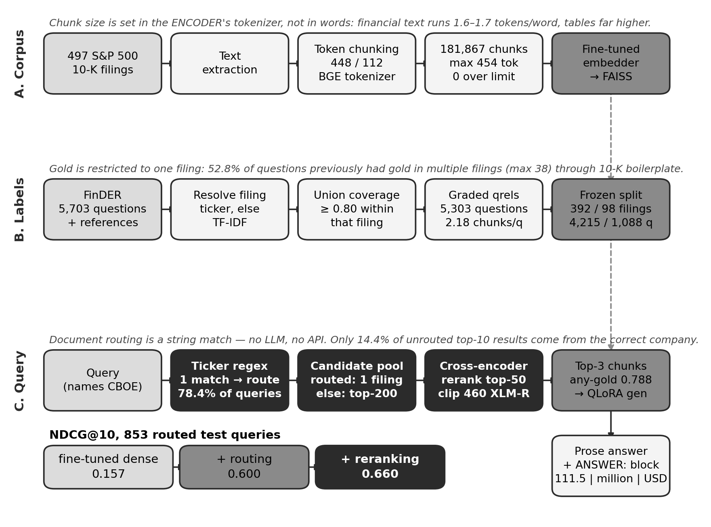
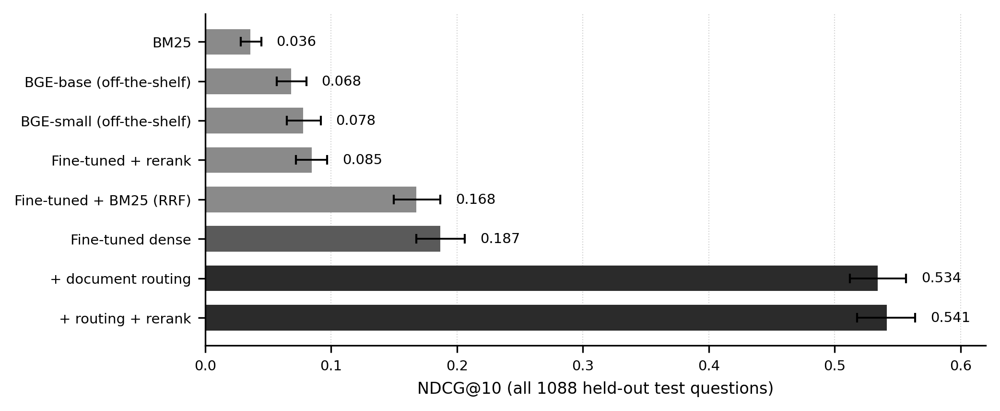
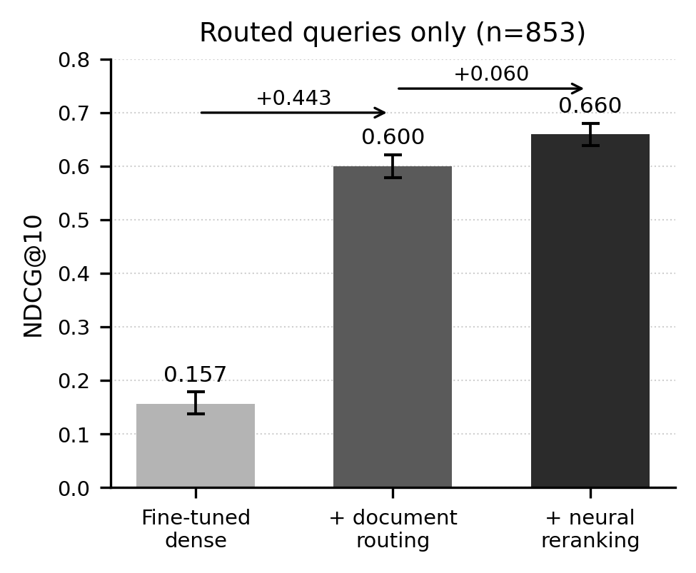
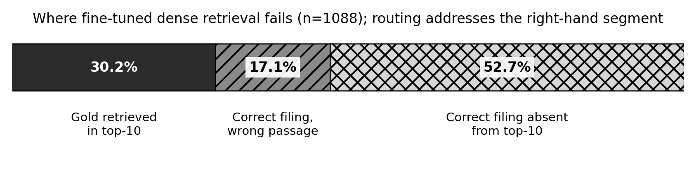
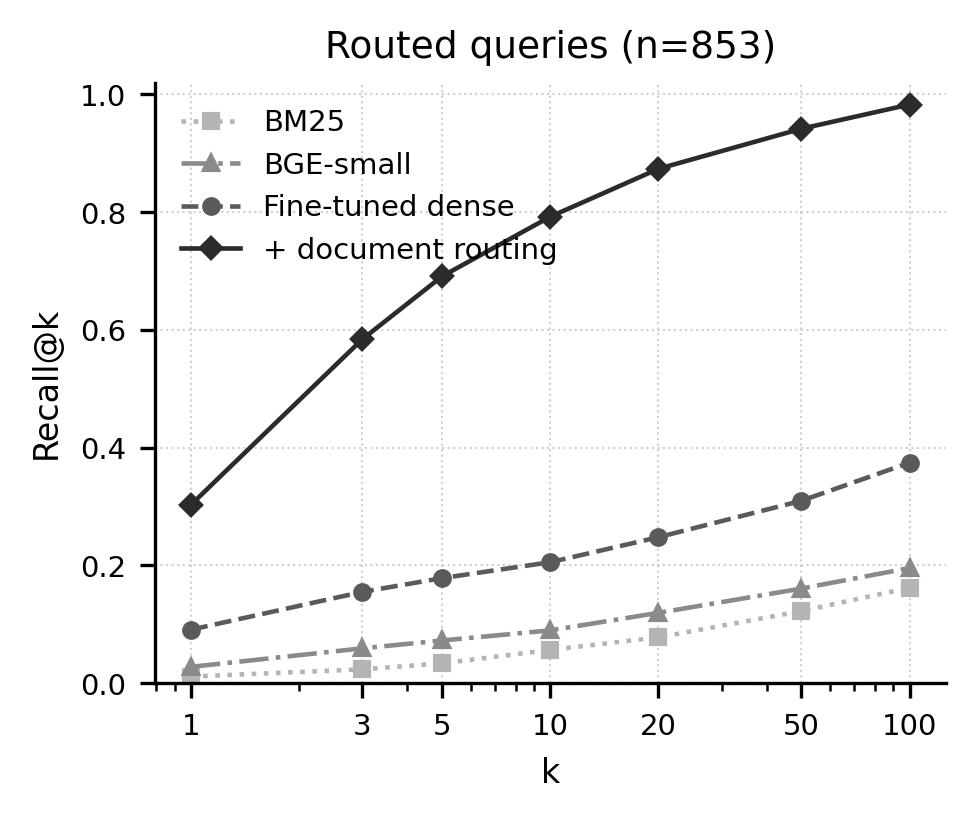
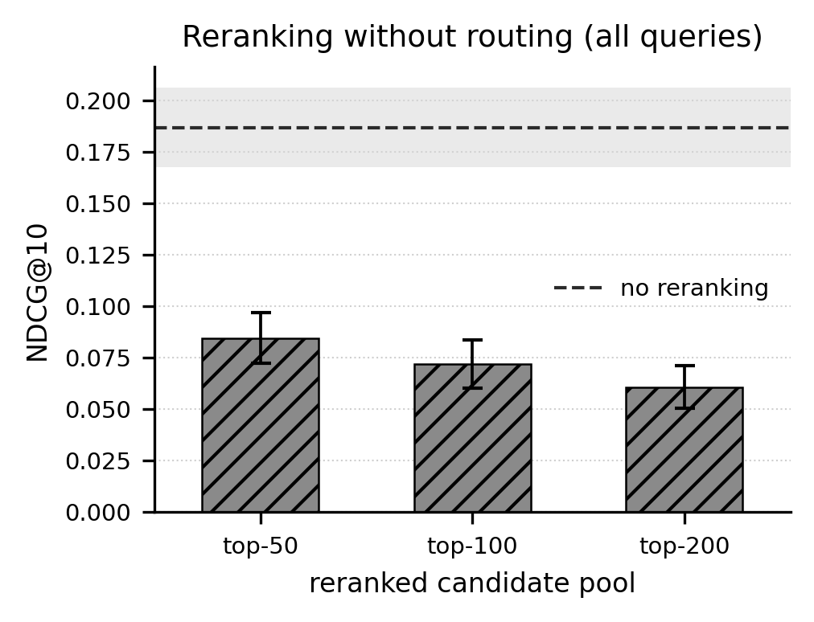
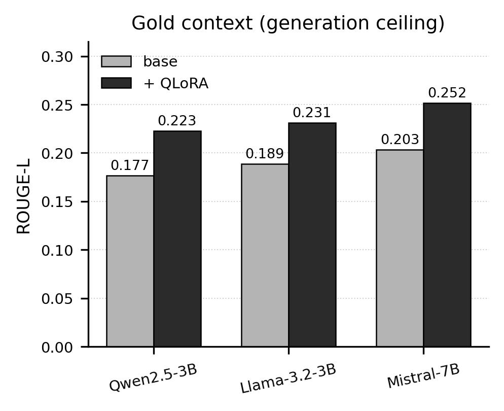
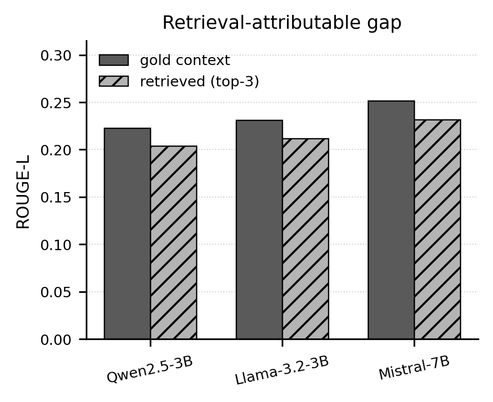
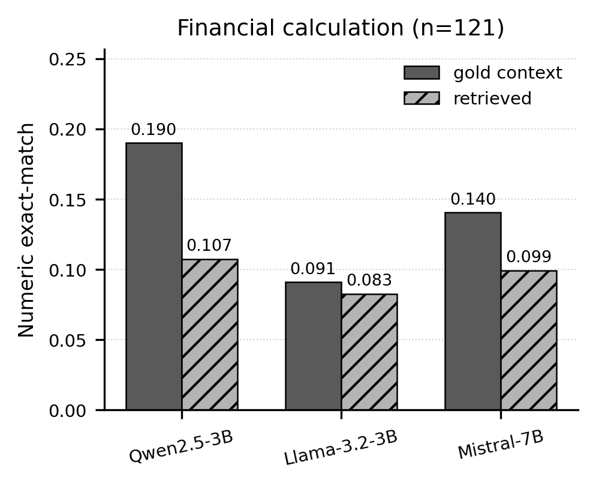
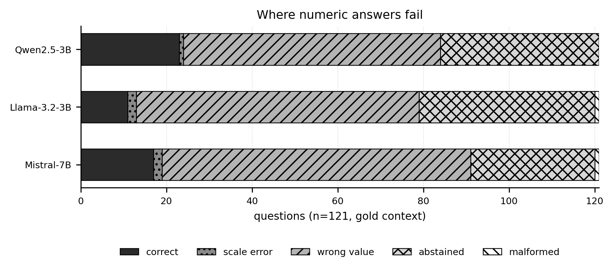

FinRAG — Figures
1. Pipeline architecture

2. Retrieval ablation — NDCG@10, 1,088 held-out test questions

3. Component contributions — 853 routed queries

4. Where retrieval fails

5. Recall@k — 853 routed queries

6. Reranking without routing — depth sweep

7. Effect of fine-tuning — ROUGE-L, gold context

8. Gold vs retrieved context — retrieval-attributable gap

9. Numeric exact-match — financial calculation, n=121

10. Numeric outcome breakdown
